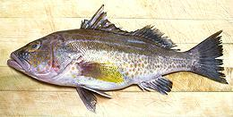
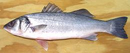
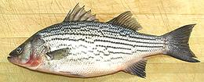
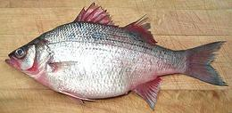
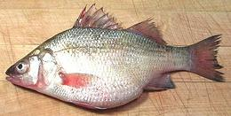
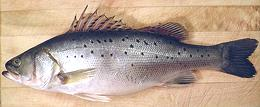

[Family Moronidae (temperate basses)]
[Family Moronidae (temperate basses)]
"Bass" is a popular name applied to many fish that aren't really bass,
but people call them "Bass" anyway, particularly the Black Bass
(Smallmouth and Largemouth). Shown here are the real bass (even though
one of them is called "Perch"), with links to some of the "not actually
a bass" fish.
More on Varieties of Fish
(very large page).
Black Bass (Large Mouth and Small Mouth) - see Sunfish.
Chilean Sea Bass - see Patagonian Toothfish.
Largemouth Bass - see Sunfish.
Smallmouth Bass - see Sunfish.
[Family Serranidae] See also Groupers.
Sand Bass [Paralabrax species.]
The several varieties of Sand Bass available in Southern California,
Barred (P.nebulifer), Spotted (P. maculatofasciatus),
Goldspotted (P. auroguttatus), are all about the same as far
as cooking is concerned. The Goldspotted is the only one much seen in
markets here in Los Angeles, and is fished mainly in the Gulf of
California. It can grow to 28 inches and 6 pounds, but the photo
specimen, caught wild in Mexican waters, was 15 inches long and
weighed a 1 pound 10 ounces. I have purchased them up to a little
over 4 pounds.
Details and Cooking
|
[Family Moronidae; Genera Dicentrarchus, Morone
Morone species are native to North American fresh water and
the West Atlantic coast of North America.
Dicentratchus species are native to the East Atlantic and
Mediterranean.
European Seabass [Branzino (Italy, Restaurants); Dicentrarchus labrax]
This Seabass is native to Western Europe and northwestern Africa.
It is common along the north coast of Norway, in the North Sea,
around the British Isles, southern Iceland, and the Atlantic coasts of
France, Spain, Morocco and Senegal. It is reasonably common in the
Western Mediterranean and the north Adriatic, but relatively scarce
in the Eastern Mediterranean. It is moderately common in the Black Sea.
Details and Cooking
Striped Bass [Striped Sea-bass, Morone saxatilis]
This sea bass is found mainly in river estuaries from the Gulf Coast of
the U.S. up the Western Atlantic coast into Canada and there are some
landlocked populations. It has been introduced to other countries and
is now farmed commercially. These fish can grow to 78 inches and 125
pounds but the one in the photo was 15-1/2 inches and weighed 1-3/4
pounds, a typical market size. This fish renews its population fairly
quickly, is not listed as threatened and is now being farmed.
Details and Cooking
White Bass [Morone chrysops]
Native to the rivers of North America, this bass looks a lot like the
Striped Bass, but it inhabits only fresh water and does not venture to
sea. These fish can grow to almost 18 inches and
6-3/4 pounds but the one in the photo was 13-1/4 inches and weighed
1 pound 6 ounces, a little larger than the average market size. This
fish is now farmed on an experimental basis and is not listed as
threatened.
Details and Cooking
White Perch [Morone americana]
Not actually a Perch but a Bass, this fish is native to the North Atlantic
coast, living in salt, brackish and fresh water, and is an invasive species
in the Great Lakes. It is a good eating fish and can be cooked in various
ways. The White Perch is not considered threatened, in fact it is
considered a nuisance in some areas. It can grow to a little over 19
inches and 4-3/4 pounds, but the photo specimen was 10 inches long and
weighed 11 ounces, toward the high end of typical market size.
Details and Cooking.
|
[Family Lateolabracidae; Genera Lateolabrax. These were formerly included in the Temperate Basses, genus Morone, but are now separate. There are only two species, both native to the western Pacific from Japan to the South China Sea.
Japanese Seabass / Seaperch [Japanese Seaperch; Seigo (Japan - under 10 inches), Fukko, Suzuki (Japan - above 20 inches); Ca Vuroc Nhat (Vietnam); Lu yu, Hua lu (China); Nong-o (Korea); Lateolabrax japonicus]
This fish is found from the north coast of Vietnam north around Korea
to the southeast tip of Russia. Also around Japan and along the west
coast of Taiwan, but not in the Philippines. Japanese Seabass can
grow to 40 inches and 19 pounds, but the photo specimen was 16-3/4
inches and weighed 2 pounds 1-1/4 ounces. This fish is both caught
wild and farmed. IUCN Red List NE (Not Evaluated), it is not
considered endangered.
Details and Cooking.
|